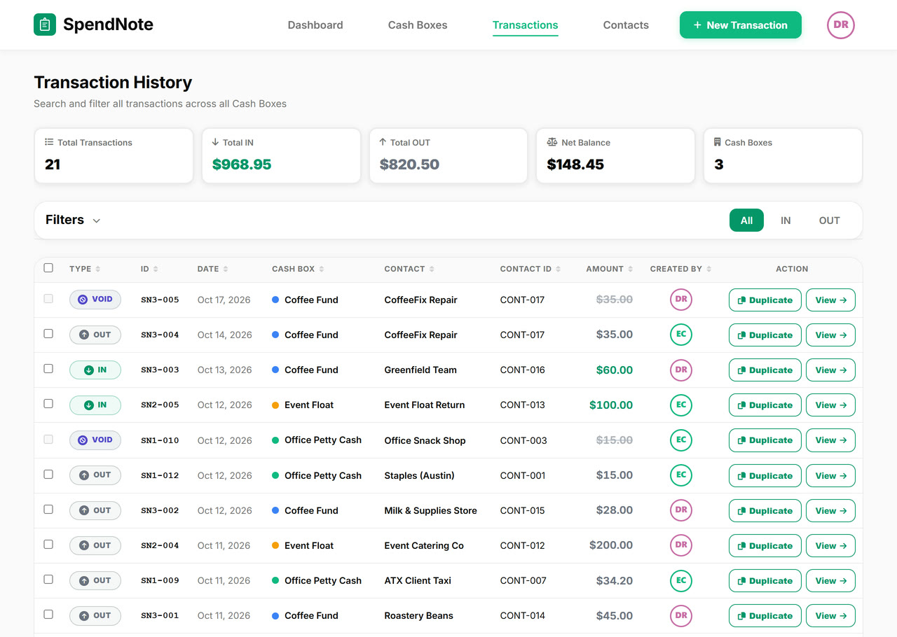

Cash Drawer Reconciliation
Know exactly what's in your drawer — and why. Document every cash transaction so your end-of-shift count always has a paper trail.

What Is Cash Drawer Reconciliation?
Cash drawer reconciliation (often called balancing the register) is the process of comparing the actual till count in your drawer to the expected amount based on your recorded transactions. You do it at the end of every shift, or when generating your end of day cash report.
If the numbers match: clean close. If they don't: you have a documented starting point to find out why.
The Standard Reconciliation Process
- Record your opening float. Before the shift starts, count and document the cash you're starting with. This is your baseline.
- Document every transaction during the shift. Every cash-in and cash-out gets a receipt. No undocumented transactions.
- Count the physical cash at shift end. Count bills and coins separately. Write down the total.
- Compare to expected balance. Opening float + cash in − cash out = expected closing balance. If it matches your count, you're done.
- Document any discrepancy. If the count is off, record the overage or shortage with a note. Patterns over time reveal the source.
- Hand off with a receipt. When the drawer passes to the next person, both parties sign a handoff receipt for the closing count.
Why Discrepancies Happen
Unrecorded Transactions
The most common cause of an unbalanced till. Someone takes cash out (petty cash, change, vendor refund) without creating a receipt. The transaction happened — it just wasn't documented in the cash log.
Incorrect Change
Giving a customer $1 too much or too little. Individually small, but adds up over a shift. Documented transaction amounts catch this at reconciliation.
Misrouted Cash
Cash put in the wrong drawer, register, or cash box. With multiple cash boxes or locations, clear labeling and separate transaction logs prevent this.
Timing Errors
A transaction from the previous shift recorded in the current one, or vice versa. Timestamped receipts eliminate ambiguity.
Close Every Shift With Receipts Already in Place
Every transaction gets a signed receipt as it happens — when the shift closes, your reconciliation log is already complete. No spreadsheet, no end-of-shift scramble. Free to start, no credit card.
Create First ReceiptHow SpendNote Supports Reconciliation
SpendNote is built around one idea: every cash movement gets a receipt. That means when you sit down to reconcile your drawer, you already have everything you need.
- Per-transaction receipts — Print, PDF, or email every cash-in and cash-out
- Transaction history with filters — Filter by date range, cash box, amount, or person
- Multiple cash boxes — Separate logs per register, drawer, or location
- Daily cash report — Print a drawer's day with opening balance, cash in, cash out, expected closing balance, and a cash count section for over / short and signatures
- CSV export — Pull your shift's transactions into a spreadsheet for reconciliation
- Shift handoff receipts — Both parties sign when the drawer changes hands
- Team access controls — Each team member sees only the cash boxes they're assigned to
Frequently Asked Questions
How often should you reconcile a cash drawer?
At minimum, at the end of every shift. High-volume cash operations often do a mid-shift count too. The key is consistency: if you reconcile every shift, discrepancies are easy to isolate.
What's an acceptable cash drawer variance?
Most businesses set a tolerance of $1–$5 per shift for small discrepancies. Anything above that requires investigation and documentation. Recurring small variances in the same direction are a red flag even if they stay under the threshold.
Do I need special software for cash drawer reconciliation?
No. You need a documented record of every cash transaction. SpendNote gives you that. A spreadsheet works too — the difference is that SpendNote generates a receipt at the time of each transaction, so the documentation happens as you work, not as a separate step.
Also see: Cash float vs petty cash, Cash handoff receipt, Cash discrepancy between shifts, Petty cash doesn't balance, Digital petty cash book, How much petty cash to keep, Daily cash report template, Cash count sheet template, Two-person cash count policy.
Try everything. Pay nothing for 14 days.
Then, if you love it
- Unlimited receipts and cash boxes
- Your logo on every receipt
- Print, PDF & CSV export
- Daily cash report with cash count
Every cash handoff, recorded and signed.
Set up in two minutes. First receipt in thirty seconds. Every entry saved and searchable.
Start my free trial